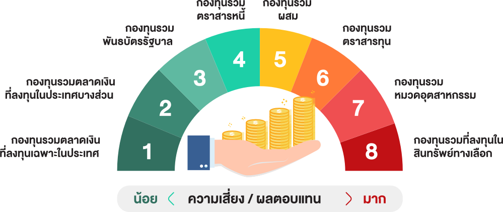

รู้จักประเภทกองทุน
“กองทุนรวม มีทั้งหมดกี่ประเภทกันแน่?”
ที่ต้องถามเช่นนี้ เพราะเชื่อว่าหลายคนที่สนใจลงทุนในกองทุนรวม และได้ลองเปิดเข้าไปดูในเว็บไซต์ต่างๆ ที่เป็นการรวบรวมกองทุนทั้งหมดที่ขายในประเทศไทย จะพบว่า... มีกองทุนประเภทต่างๆ มากมายหลายพันกองทุน จากหลากหลายบริษัทหลักทรัพย์จัดการกองทุน (บลจ.) บางคนถึงกับไปต่อไม่ถูก ไม่รู้จะเลือกกองไหนดี
การทำความรู้จัก “ประเภทของกองทุน” ก่อนเริ่มต้นลงทุน จึงเป็นพื้นฐานที่สำคัญที่จะช่วยให้นักลงทุนสามารถเลือกกองทุนที่เหมาะสม สอดคล้องกับสไตล์การลงทุนและระดับความเสี่ยงที่ยอมรับได้ของตนเอง
ซึ่งกองทุนรวมที่ขายในประเทศไทยแบ่งเป็น 8 ประเภทหลักๆ ตามระดับความเสี่ยง (Risk Spectrum) เรียงจากน้อยไปมาก
ความเสี่ยงระดับที่ 1 กองทุนรวมตลาดเงินในประเทศ
เป็นกองทุนที่เน้นลงทุนในเงินฝาก ตั๋วเงิน รวมถึงตราสารหนี้ที่มีอายุเฉลี่ยไม่เกิน 1 ปี มีความเสี่ยงต่ำที่สุด เหมาะสำหรับผู้ลงทุนที่ไม่ต้องการความเสี่ยง หรือผู้ที่ต้องการพักเงินในช่วงที่ผลตอบแทนไม่ดี
ความเสี่ยงระดับที่ 2 กองทุนรวมตลาดเงินต่างประเทศ
เป็นกองทุนที่เน้นลงทุนในเงินฝาก ตั๋วเงิน รวมถึงตราสารหนี้ที่มีอายุเฉลี่ยไม่เกิน 1 ปี เหมือนกลุ่มแรก แต่อาจมีการลงทุนในต่างประเทศบางส่วน จึงทำให้มีความเสี่ยงเรื่องอัตราแลกเปลี่ยนเพิ่มขึ้นมา แต่โดยปกติกองทุนประเภทนี้มักจะมีการป้องกันความเสี่ยงอัตราแลกเปลี่ยนเอาไว้
ความเสี่ยงระดับที่ 3 กองทุนรวมพันธบัตรรัฐบาล
เป็นกองทุนที่เน้นลงทุนในตราสารหนี้ภาครัฐ เช่น พันธบัตรรัฐบาล หรือพันธบัตรรัฐวิสาหกิจ ซึ่งส่วนใหญ่จะมีอายุเฉลี่ยมากกว่า 1 ปีขึ้นไป จึงมีความผันผวนมากกว่ากองทุนรวมตลาดเงิน
ความเสี่ยงระดับที่ 4 กองทุนรวมตราสารหนี้
เป็นกองทุนที่เน้นลงทุนในตราสารหนี้ทั้งภาครัฐและภาคเอกชน เช่น พันธบัตรรัฐบาล พันธบัตรรัฐวิสาหกิจ ตั๋วเงินคลัง และหุ้นกู้เอกชน ซึ่งมีทั้งกองที่ลงทุนในตราสารหนี้ระยะสั้น (อายุเฉลี่ยไม่เกิน 1 ปี) และตราสารหนี้ระยะยาว (อายุเฉลี่ยมากกว่า 1 ปี) จึงเหมาะกับผู้ที่ลงทุนได้ทั้งระยะสั้น ระยะยาว และผู้ที่รับความเสี่ยงได้ไม่มาก คาดหวังผลตอบแทนที่แน่นอน สม่ำเสมอ รวมถึงผู้ที่ต้องการกระจายความเสี่ยงของพอร์ตการลงทุน
ความเสี่ยงระดับที่ 5 กองทุนรวมผสม
เป็นกองทุนที่สามารถลงทุนในสินทรัพย์อะไรก็ได้ ไม่ว่าจะเป็นเงินฝาก ตราสารหนี้ หุ้น หรืออื่นๆ ซึ่งสัดส่วนการลงทุนจะลงทุนในอะไรมากกว่ากัน ก็ต้องไปดูในนโยบายการลงทุนของกองทุน เหมาะสำหรับผู้ที่รับความเสี่ยงได้ปานกลางถึงสูง และผู้ที่ไม่มีเวลาในการปรับสัดส่วนกองทุนหรือหุ้น หากตลาดมีความผันผวนมาก
ความเสี่ยงระดับที่ 6 กองทุนรวมตราสารทุน
เป็นกองทุนที่เน้นลงทุนในหุ้นทั้งในประเทศและต่างประเทศ ซึ่งกองทุนประเภทนี้หมายความรวมไปถึงกองทุน SSF และ RMF ที่เราคุ้นเคยกันดีด้วย เหมาะกับผู้ที่ต้องการผลตอบแทนสูงและรับความเสี่ยงได้สูง หรือผู้ที่ชอบการลงทุนในหุ้น แต่ไม่มีเวลาบริหารการลงทุน
ความเสี่ยงระดับที่ 7 กองทุนรวมตามหมวดอุตสาหกรรม
เป็นกองทุนที่เน้นลงทุนในหุ้น แต่เจาะจงอุตสาหกรรมมากขึ้น เช่น หุ้นธนาคาร หุ้นสื่อสาร หุ้นโรงพยาบาล ฯลฯ แต่กองทุนประเภทนี้จะมีความเสี่ยงสูงกว่ากองทุนรวมตราสารทุนทั่วไป เนื่องจากมีการลงทุนแบบกระจุกตัว จึงเหมาะกับผู้ที่รับความเสี่ยงได้สูง และมีความรู้ความเข้าใจในอุตสาหกรรมนั้นๆ อย่างดี
ความเสี่ยงระดับที่ 8 กองทุนรวมทางเลือก
เป็นกองทุนที่เน้นลงทุนในทางเลือกอื่นๆ ที่นอกเหนือจากสินทรัพย์พื้นฐาน เช่น ทองคำ น้ำมัน ฯลฯ เหมาะกับผู้ที่รับความเสี่ยงได้สูง และผู้ที่ต้องการกระจายการลงทุนไปยังสินทรัพย์อื่นๆ เพื่อลดความเสี่ยงของพอร์ตการลงทุนโดยรวม แต่อาจต้องศึกษาและทำความเข้าใจรายละเอียดที่เกี่ยวข้องกับทางเลือกนั้นๆ มากยิ่งขึ้น
ส่วนกองทุนที่ลงทุนในอสังหาริมทรัพย์รวมไปถึงโครงสร้างพื้นฐานต่างๆ นั้น บลจ. จะเป็นผู้พิจารณาว่าจะจัดให้อยู่ในระดับความเสี่ยงเท่าใด ตั้งแต่ความเสี่ยงระดับที่ 4 ไปจนถึงระดับที่ 8 ขึ้นอยู่กับนโยบายและ สัดส่วนการลงทุนของกองทุนนั้นๆ
นอกเหนือไปจากนี้ ยังมีกองทุนประเภทที่ไม่สามารถจัดกลุ่มได้อีกบางส่วน แต่ไม่ว่าคุณจะลงทุนในกองทุนประเภทใดก็ตาม
อย่าลืม... ศึกษาเงื่อนไขการลงทุน นโยบายการลงทุน ระดับความเสี่ยงและผลการดำเนินงานของกองทุนในอดีตให้ละเอียดรอบคอบก่อนเสมอ
เพียงเท่านี้... คุณก็สามารถใช้ “กองทุนรวม” เป็นตัวช่วยในการต่อยอดความมั่งคั่งได้อย่างสบายใจ ไร้กังวล